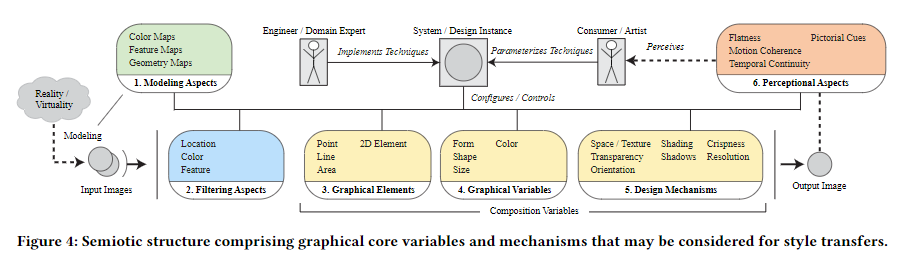
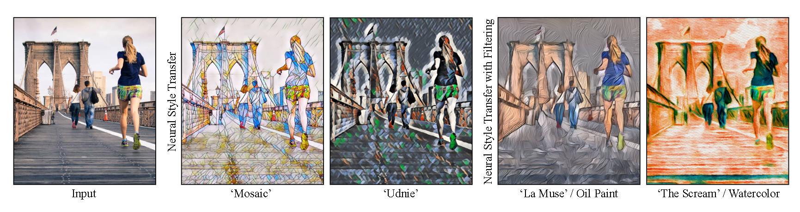
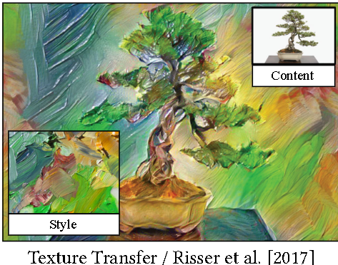
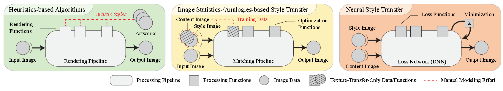
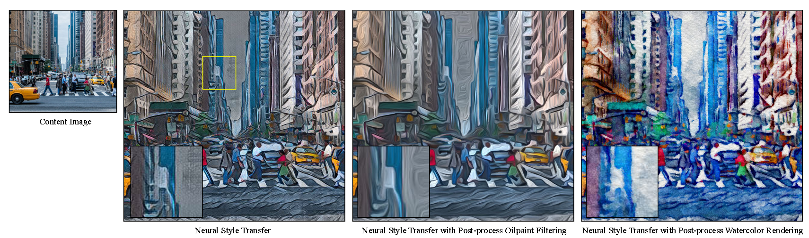

<h1 id="section-carte-de-lecture-polaire">Section carte de lecture polaire</h1>
<p><br><br></p>
<h1 id="section-annotation-polaire">Section annotation polaire</h1>
<p>stylization</p>
<p>convolutional neural network</p>
<p>characteristics of artistic style</p>
<p>In this paper we discuss the potentials and challenges of NST for IB- AR</p>
<p>demonstrated that these technical limitations can be alleviated as follows</p>
<p>(1) Deep CNNs are able to accurately classify high-level im- age contents across generalized data sets [Simonyan and Zisserman 2015]</p>
<p>(2) Layers of pre-trained deep CNNs can be activated to match content and style statistics, and thus perform a neural style transfer (NST) between arbitrary images [Gatys et al. 2016b] (Figure 1)</p>
<hr>
<p></p>
<p>casual creativity</p>
<p>artistic rendering,</p>
<p>mage processing</p>
<p>Image-based Artistic Rendering</p>
<p>neural style transfer (NST)</p>
<p>Computing methodologies</p>
<p>propose a semiotic structure to derive a technical research agenda for NSTs with respect to the grand challenges of NPAR.</p>
<p>it also has to evolve as an interactive tool that considers the design aspects and mecha- nisms of artwork production</p>
<p>Semiotics deals with the study of symbols and how they communi- cate image contents or information in a meaningful way [Bertin 2010]</p>
<p>SEMIOTIC STRUCTURE FOR ARTISTIC STYLE TRANSFER</p>
<p>ARTISTIC STYLE TRANSFER</p>
<p>Definition “Artistic Style”:</p>
<p>NST techniques apparently lack to model graphical ele- ments/variables and provide interactive (creative) control</p>
<hr>
<p></p>
<p>a semiotic structure that considers these design aspects and the mechanisms of interactive NPAR has not been formulated yet.</p>
<p>evolve (neural) style transfers as interactive tools that ease the visual expression of artists, non-artists and scientists for illus- trative visualization [Gooch et al. 2010; Isenberg 2016; Salesin 2002]</p>
<p>Modeling Aspects</p>
<p>Filtering Aspects</p>
<p>semiology principles of Bertin [2010] and MacEachren et al. [2012] that provide a theoretical foundation to visualization (Figure 4).</p>
<p>Style Transfer using Neural Networks</p>
<p>Style Transfer using Image Analogies : Techniques that use image pairs for training—a source image and an artistic depiction of this image—i. e., to learn an analogous transfor- mation such that content images can be transformed into an artistic rendering of similar visual style [Hertzmann et al. 2001].</p>
<p>Style Transfer using Neural Networks: Techniques that employ neural networks to separate and recombine the content and style of arbitrary inputs. Typically, loss func- tions are minimized iteratively to balance the components of style and content in the output [Gatys et al. 2016b], or train feed-forward neural networks for linear image trans- formation [Johnson et al. 2016a,b].</p>
<p>(1) Heuristics-based Algorithms: Paradigms that are based on rendering functions, which are implemented by a do- main expert who explicitly models individual artistic styles and its correspondent design aspects or mechanisms. This group basically comprises stroke-based rendering, region- based techniques, image processing and ltering, and may also account for physically-based simulations.</p>
<p>(2) Style Transfer Algorithms : Example-based rendering which is directed to learn or reproduce artistic styles from visual examples (ground-truth data sets). This type often comprises statistical models and optimization schemes to balance aspects of content and style in the stylized output</p>
<hr>
<p></p>
<hr>
<p></p>
<p>Feed-forward Approaches</p>
<p>Definition “Artistic Style”: The constant form—and some- times the constant elements, qualities, and expression—in the art of an individual or a group. — Meyer Schapiro [Schapiro 1994]</p>
<p>Citer: (Semmo et al., 2017)</p>
<p>FTag:Semmo-et-al-2017</p>
<p>Biblio:</p>
<p>Semmo, A., Isenberg, T., &amp; Döllner, J. (2017). Neural style transfer: A paradigm shift for image-based artistic rendering? <em>Proceedings of the Symposium on Non-Photorealistic Animation and Rendering - NPAR ’17</em>, 1–13. <a href="https://doi.org/10.1145/3092919.3092920">https://doi.org/10.1145/3092919.3092920</a></p>
<hr>
<p></p>
<hr>
<p></p>
<hr>
<p></p>
<hr>
<p></p>
<p>Proposal 5: Supporting Visualization Tasks</p>
<p>CONCLUSION Deep learning has opened new possibilities for IB-AR to make a gen- eralized style transfer practicable. On the one hand, NSTs provide new potentials for using IB-AR in context-sensitive and creative application domains, such as casual creativity apps for mobile ex- pressive rendering and production tools for feature lms. On the other hand, NSTs currently provide only “black box” solutions from a HCI point-of-view: research (so far) has mainly focused on tuning hyperparameters of deep neural networks. To this end, we propose a semiotic structure to provide developers of NST techniques with the conceptual means of artworks production to help them compose and extend artistic styles, as well as consider design aspects and mechanisms for evolving NSTs as interactive tools. In particular, we hope that this structure helps researchers to identify requirements for semiotics-based loss functions, combine NSTs with the knowl- edge of other IB-AR paradigms, promote completely new artistic styles, and assist applications in illustrative visualization</p>
<h1 id="section-analyse-structur-e-en-grille-sagrid-">Section analyse structurée en grille (SAGrid)</h1>
